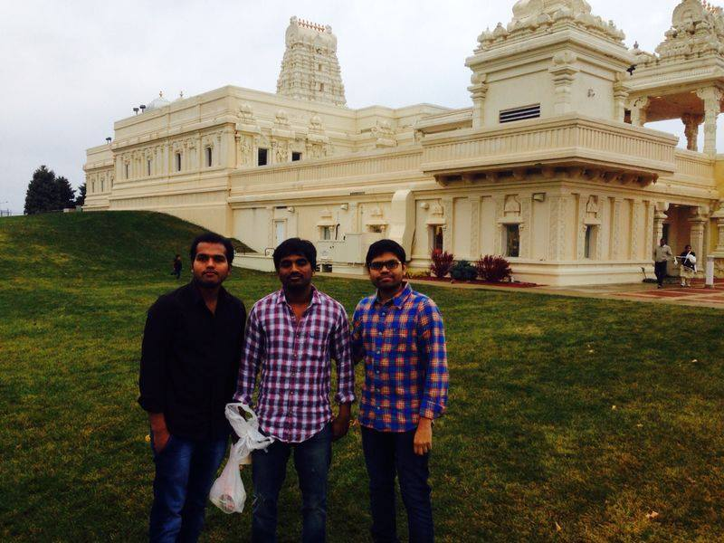

Company Information: About spencer's
Raghunandan is a rich, unhappy businessman based in Milan. He wishes to reconcile with his estranged daughter Sunanda whom he expelled because she married Rajasekhar against his wishes. His grandson Gautham Nanda promises Raghunandan that he will bring her back to their home on his 80th birthday. Sunanda has three daughters: Two of them are Prameela and Sashi. Gautham enters the house as Siddhu, a driver who was appointed by Rajasekhar after saving him from a heart attack. Gautham tries to woo Prameela but gives up when he learns that Prameela is in love with another man. Sashi hates Gautham and is suspicious of him and Paddu, his friend and a nurse who is appointed to take care of Rajasekhar.To save Prameela's love, Gautham and Paddu go to a village and accidentally Sashi falls into the jeep due to a head injury thus suffering with amnesia. Gautham introduces himself as her lover for the time being. Sashi believes it. The trio go to the venue; Gautham and Paddu enter the house. They and the bridegroom escape from there and reach Sunanda's home after a violent altercation with the family members of the bridegroom where Sashi's memory is revived. The bride's father Siddhappa asks for compensation for the damage caused by Siddhu, to which Sunanda promises Sashi's marriage with Siddhappa's elder son. To avoid complications, Rajasekhar fires Gautham. Gautham later learns that Sashi loved him from the beginning but was hesitant to express her feelings. He traps Baddham Bhaskar, a rich NRI staying in Uganda who has a penchant for women, and enters Sunanda's home as his assistant.

Bhaskar falls for Sashi but his attempts are repeatedly thwarted by Gautham. On the day of her marriage, Sashi elopes with Gautham. While waiting with him for the train to Chennai, Siddhappa's men reach the station to stop them only to be trashed by Gautham and his assistants, led by Balu. Through Balu, Sashi comes to know Gautham's real motive. An angry Rajasekhar, with Sunanda, arrive to shoot Gautham but Rajasekhar is taken aback after knowing his true identity. Gautham reveals that the day Sunanda left the house, Raghunandan tried to commit suicide but accidentally killed Gautham's mother. He says that he chose to love his grandfather though he killed his mother. Sunanda chose to hate him as he injured Rajasekhar and expelled them.Bhaskar falls for Sashi but his attempts are repeatedly thwarted by Gautham. On the day of her marriage, Sashi elopes with Gautham. While waiting with him for the train to Chennai, Siddhappa's men reach the station to stop them only to be trashed by Gautham and his assistants, led by Balu. Through Balu, Sashi comes to know Gautham's real motive. An angry Rajasekhar, with Sunanda, arrive to shoot Gautham but Rajasekhar is taken aback after knowing his true identity. Gautham reveals that the day Sunanda left the house, Raghunandan tried to commit suicide but accidentally killed Gautham's mother. He says that he chose to love his grandfather though he killed his mother. Sunanda chose to hate him as he injured Rajasekhar and expelled them.
Bhaskar falls for Sashi but his attempts are repeatedly thwarted by Gautham. On the day of her marriage, Sashi elopes with Gautham. While waiting with him for the train to Chennai, Siddhappa's men reach the station to stop them only to be trashed by Gautham and his assistants, led by Balu. Through Balu, Sashi comes to know Gautham's real motive. An angry Rajasekhar, with Sunanda, arrive to shoot Gautham but Rajasekhar is taken aback after knowing his true identity. Gautham reveals that the day Sunanda left the house, Raghunandan tried to commit suicide but accidentally killed Gautham's mother. He says that he chose to love his grandfather though he killed his mother. Sunanda chose to hate him as he injured Rajasekhar and expelled them.Bhaskar falls for Sashi but his attempts are repeatedly thwarted by Gautham. On the day of her marriage, Sashi elopes with Gautham. While waiting with him for the train to Chennai, Siddhappa's men reach the station to stop them only to be trashed by Gautham and his assistants, led by Balu. Through Balu, Sashi comes to know Gautham's real motive. An angry Rajasekhar, with Sunanda, arrive to shoot Gautham but Rajasekhar is taken aback after knowing his true identity. Gautham reveals that the day Sunanda left the house, Raghunandan tried to commit suicide but accidentally killed Gautham's mother. He says that he chose to love his grandfather though he killed his mother. Sunanda chose to hate him as he injured Rajasekhar and expelled them.
